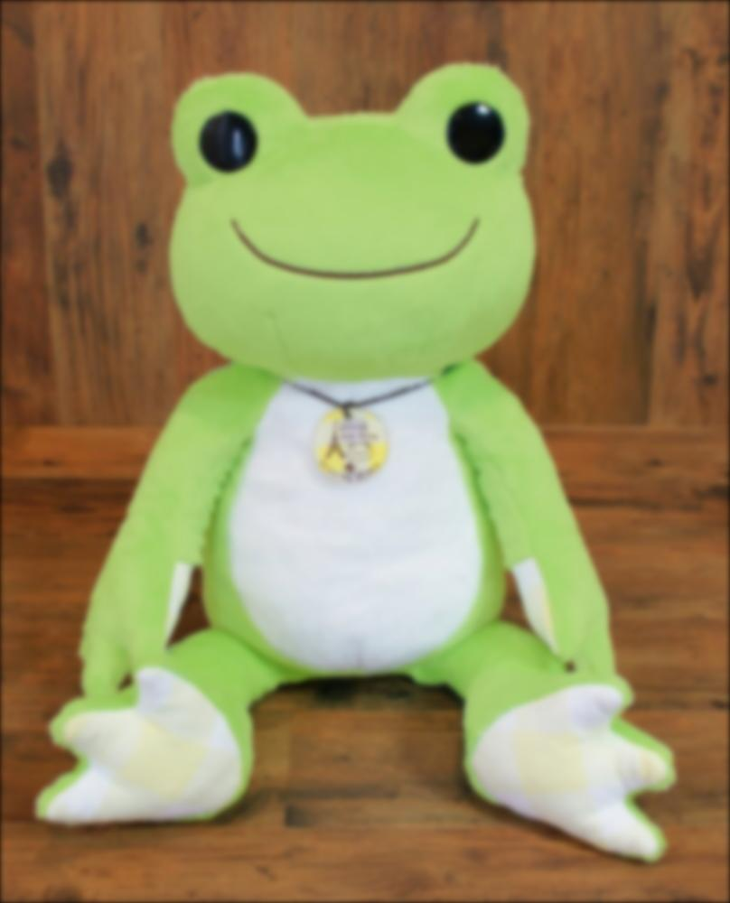
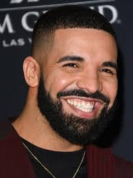
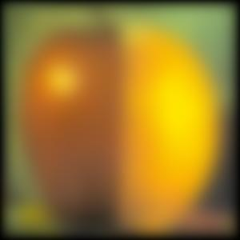

Project Two: Fun with Filters and Frequencies!
Part 1.1
The following is code to implement convolution using numpy functions with 4 and 2 loops. Although the runtimes of my implemented convolve functions are decent, they are significantly slower than the scipy.signal.convolve2d implementation. For convolving an 100x100 array with an 11x11 kernel, it took the 4 loop implementation 0.86s, the 2 loop implementation 0.067s and the SciPy implementation 0.0035s, making the Scipy implementation around 20 times faster than the 2 loop implementaion and around 250 times faster than the 4 loop implementation. My implemenation always zero pads and produces an array of equal size as the input, while scipy.signal.convolve2d is customizable, although it defaults to a full convolution with zero padding, making the output larger than the input.
def convolve_pad_4(arr, kernel):
kernel = np.flip(kernel, axis=(0, 1))
a_shape = arr.shape
k_shape = kernel.shape
if k_shape[0] % 2 != 1 or k_shape[1] % 2 != 1:
return None
pad_h = k_shape[0] // 2
pad_w = k_shape[1] // 2
padded_arr = np.pad(arr, pad_width=((pad_h, pad_h), (pad_w, pad_w)), mode='constant', constant_values=0)
result = np.zeros(a_shape)
for row in range(a_shape[0]):
for col in range(a_shape[1]):
acc = 0
for r in range(k_shape[0]):
for c in range(k_shape[1]):
acc += padded_arr[row + r][col + c] * kernel[r][c]
result[row][col] = acc
return result
def convolve_pad_2(arr, kernel):
kernel = np.flip(kernel, axis=(0, 1))
shape = arr.shape
k_shape = kernel.shape
if k_shape[0] % 2 == 0 or k_shape[1] % 2 == 0:
return None
pad_h, pad_w = k_shape[0] // 2, k_shape[1] // 2
padded = np.pad(arr, ((pad_h, pad_h), (pad_w, pad_w)), mode='constant', constant_values=0)
result = np.zeros(shape)
for row in range(arr.shape[0]):
for col in range(arr.shape[1]):
region = padded[row:row + k_shape[0], col:col + k_shape[1]]
result[row, col] = np.sum(region * kernel)
return result
Part 1.2
Partial derivatives of the cameraman in x and y.
Gradient magnitude image and binarized edge image of cameraman.
(A threshold of 0.2 was used for the binarized image to keep most of the person while eliminating most of the noise and background)
Part 1.3
Gaussian smoothing and Derivative of Gaussian filters applied to cameraman image.
The resulting images have thicker and smoother lines. However, some details are lost, especially in the camera.
Gaussian filter and Derivative of Gaussian Filters.
Part 2.1
Sharpening an image is achieved by the equation:
sharp_image = image + a*high_frequencies, high_frequencies = image - blurred_iamge, a = constant.
Blurred, high Frequencies, and Sharpened versions of the Taj Mahal. (a = 3, 10)
Blurred, high Frequencies, and Sharpened versions of Pickles The Frog. (a = 3, 10)

Part 2.2
Hybrid image of Derek and Nutmeg (sigma1 = 1, sigma2 = 6)


Hybrid image of Lebron James and another goat (sigma1 = 1, sigma2 = 8)
Aligned images of Lebron and another goat.
Fourier transform of Lebron, filtered Fourier transform of Lebron,
Fourier transform of goat, and filtered Fourier transform of goat (left to right)
Hybrid image of Diddy and Drake (sigma1 = 2, sigma2 = 6)

Part 2.3 + 2.4
Apple blended with Orange: the Oraple


Intermediate Images (Gaussian and Laplacian Stacks)


Stanford blended with hell
A Cat and Dog blended together